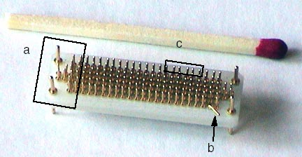
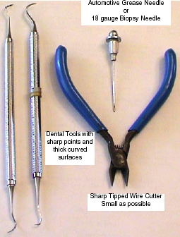
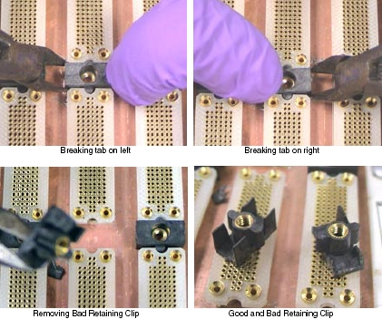
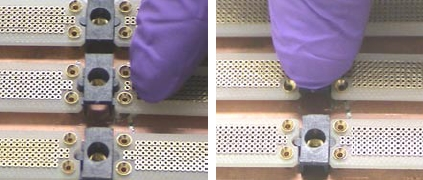

Operating Documentation
Direction 5181178-800, Rev# 16
BrightSpeed Select Service Methods Gen
Module Version 2.0, Version Date 3/9/09
Operating Documentation |
| Required Persons | Preliminary Reqs | Procedure | Finalization |
|---|---|---|---|
| 1 |
Reference MDAS/GDAS 16 DDIF Cleaning Procedure for detailed procedures.
| Last Revised: | 9 February 2009 |
| ||||
| Failure to follow correct procedures can result in bent or broken Interposer pins. This can result in intermittent artifacts, noise, or DAS Chassis/Detector replacement. Never use screwdrivers, pocket knives etc, to service the DDIF. | ||||
Damage sustained by using wrong tool and rough handling.
Bent pins - Result of screwdriver as a removal tool.
Broken pin - Result of forcing the Flex onto the Interposer.
Also caused by using incorrect Interposer installation method.
Loose pins - Result of forcing the Interposer to seat in the backplane BGA connector.
Illustration 1: Interposer damaged by using wrong tools

If you are reading this you are in desperate trouble. A male pin is broken off in a female socket. You have two choices;
Replace the DAS Chassis if pin is in the backplane BGA connector or replace the Detector if pin is in a flex lead.
Attempt to remove the broken pin.
| NOTE: | Do not break a pin off a good interposer so it will fit. Microphonics noise and/or image artifacts will result. |
There is no specific procedure for this action. These are suggestions that may save you significant time and expense.
You will need a magnifying glass, ESD protection, Nitrile gloves and very sharp strong pointed tools.
Use ESD wrist strap and Nitrile gloves to prevent further damage to detector FETs or DAS electronics.
Move the table to its lowest position. Place the DAS near 6 O’clock and lock it in place. This will allow you to sit comfortably and use your knees as a resting place to keep your hands steady.
Use the magnifying glass to closely inspect the broken male pin. A small section should be visible since the female socket is cone shaped. Male pins generally break off at the base.
Use a biopsy needle, 18 gauge or larger, or a dental pick with a thick working surface. See Illustration 2.
Biopsy needles can be found in most medical facilities.
Dental tools can be obtained from most Dentist offices. They regularly discard older utensils.
A grease needle can be purchased at an automotive parts store.
Objective:
Use the sharp pointed tool to raise the broken pin out of the female socket. Raise it enough so that a fine tipped wire cutter can extract the pin fully.
Warnings:
Be very careful not to damage the female connector. Deep scratches or gouges are bad and the component would need to be replaced.
Do not "Dig" the pin out. This will damage the female socket or connector.
Do not put anything in the female socket such as a needle.
Be careful of metal shavings. They can cause problems elsewhere.
Do not attempt to drill out a broken pin.
Testing:
Assemble gantry and restore power.
It takes 2 minutes of warm-up time for every minute the DAS was turned off, up to 1 hour.
Perform Image Quality testing.
Illustration 2: Emergency Interposer Pin removal tools

| ||||
| The replacement of this part must be performed with great care. Severe damage to the backplane bga connector can result requiring DAS chassis replacement. | ||||
Removal Procedure
This requires destroying the damaged Retainer Clip.
| ||||
| Potential for Shock | ||||
| Voltage may be present. | ||||
| Use proper lockout/tagout procedures before replacing components. See safety menu of Service Document gui for appropriate procedures. |
Gantry covers are removed and Lockout/Tagout power control performed. See Accessing the MDAS Assembly.
Failed retainer clip has been identified. Flex lead and Dust Shield have been removed.
Remove flex lead and dust shield from left and right sides of the failed retainer clip.
Position Gantry with failed retainer clip at the 2 O’clock position.
Lock the gantry in position, using the rotational lock.
Refer to “Rotational Locking Pin,” in Equipment Service - Gantry (located in the Safety tab of this publication).
Using small sharp side cutters, grip the right side of the damaged retainer clip. Squeeze the clip until it cracks and fragments into smaller pieces.
Illustration 3: Removing Retaining Clip from DDIF

Perform the same process as in the previous step on the left side of the failed retainer clip.
You must destroy the damaged retainer clip to remove it.
Remove from the backplane, all fragments of the destroyed retainer clip.
Observe the new retainer clip has snap lock features on two sides. These snap locks secure to the "A" and "B" backplane BGA connectors.
With your Nitrile Glove protected fingers, push the retainer clip into place.
Make sure the new retainer clip is installed perpendicular to the backplane.
Illustration 4: Positioning and Seating new Retaining Clip

Assemble the DDIF, unlock the gantry.
Restore gantry power.
It takes 2 minutes of warm-up time for every minute the DAS was turned off, up to 1 hour.
Perform “Image Quality Test Procedures” (located in Troubleshooting → Image Quality folder).